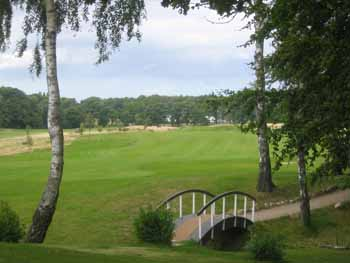
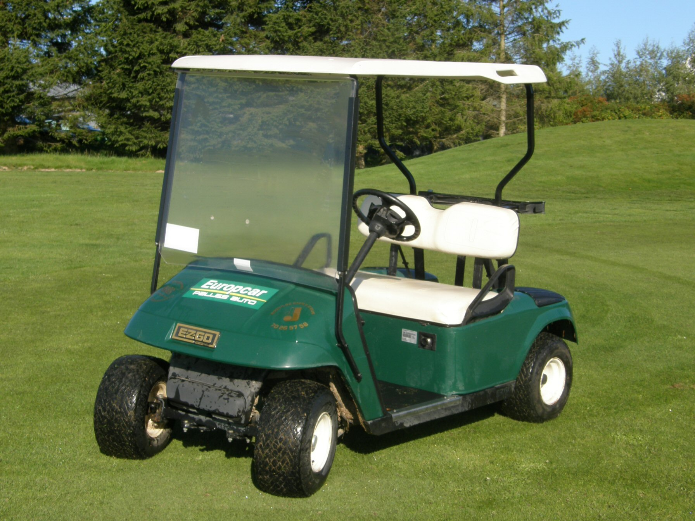
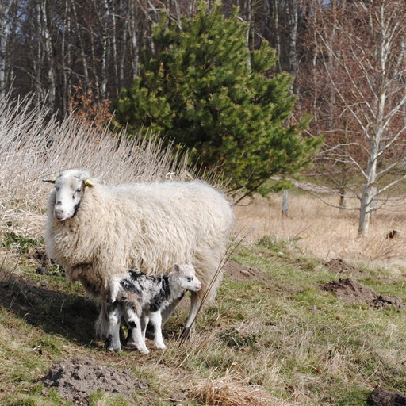
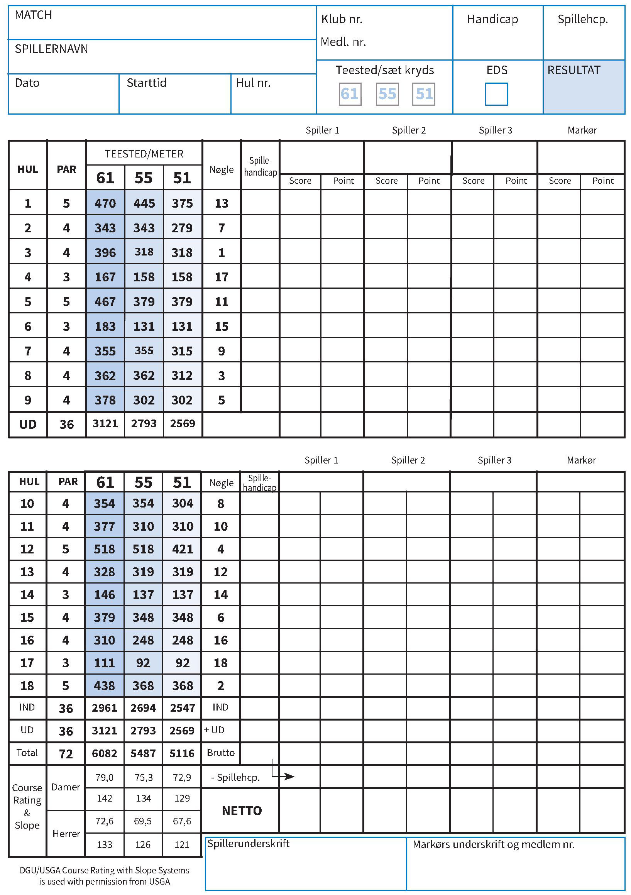
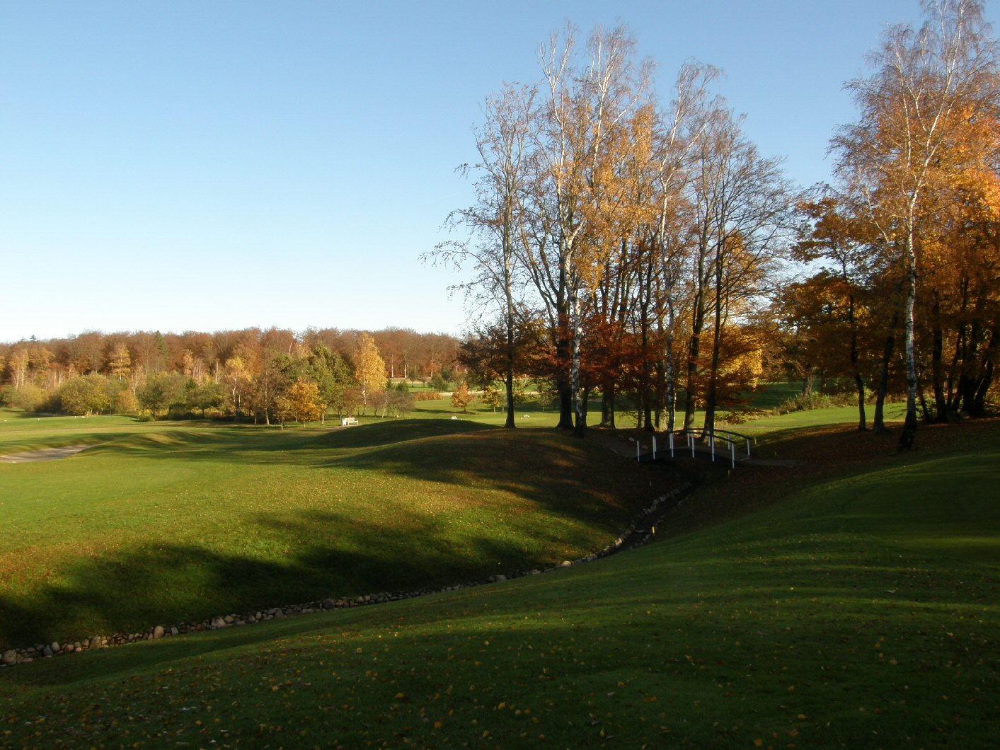
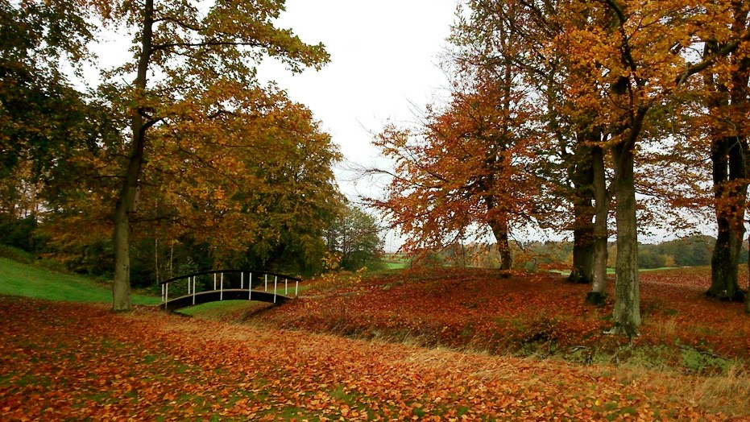
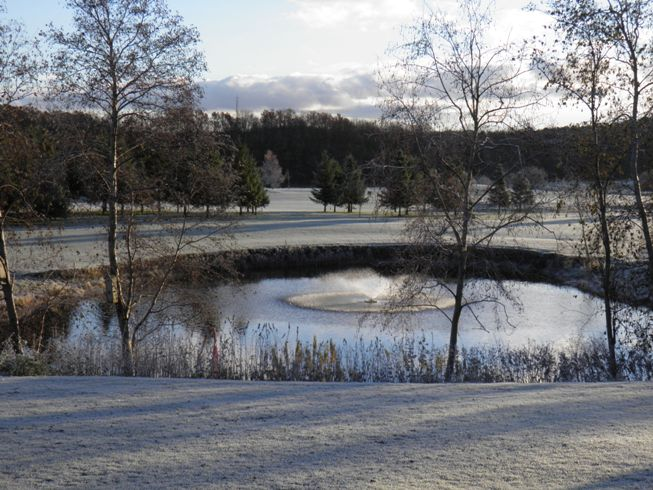

<div class="pages">
  <div data-page="lanes" class="page navbar-fixed toolbar-fixed" >
    <div class="navbar">
      <div class="navbar-inner">
        <div class="left">
          <a href="#" class="link back icon-only"><i class="icon icon-back"></i></a>
          <!-- <a href="#" class="back link icon-only"><i class="icon icon-back"></i></a> -->
        </div>
        <div class="center">Banerne</div>
        <!-- <div class="right"></div> -->
        <div class="right">
        </div>
      </div>
    </div>
    <div class="page-content" style="padding-top:45px;">
       <div class="content-block">
          <p>Fra juli 2015 har Hornbæk Golfklub 2 golfbaner:</p>
          <p><i>18-hullers banen og par-3 banen Lærkeager</i></p>
        </div>
        <div class="content-block">
          <center></center>
        </div>
        <div class="content-block" style="margin-bottom:0px;">
          <p><i>I det følgende beskriver vi den oprindelige bane - 18-hullers banen. Beskrivelse og information om Lærkeager banen, som er en 9-hullers Play-and-Pay bane, kan du finde under menuen "Lærkeager banen" ude til venstre.</i></p>
          <p>Information om banen</p>
          <p>Med 6082 meter fra tee 61 er Hornbæk en af landets længste baner.</p>
          <p>Mange af landskabets spilletekniske forhindringer, så som levende hegn, bakker, søer og vandløb, er i spil og gør sammen med længden også banen til een af landets sværeste golfbaner - men alligevel spilbar for golfspillere på alle niveauer.
</p>
          <p>Banen er meget varieret, nogle huller ganske kuperede, andre med svære doglegs. Undervejs møder spillerne raviner, stenrøser, diger, tværgående gravede grøfter, en rislende bæk og meget mere. Især de afsluttende sidste syv huller giver både en natur- og en golfoplevelse ud over det sædvanlige.</p>
        </div>
        <div class="content-block" style="margin-top:0px;">
          <center></center>
        </div>
        <div class="content-block" style="margin-bottom:0px;">
          <p>Banen fik en fantastisk anmeldelse fra Teetime i 2011</p>
          <p>I 2011 blev vi rated som den 9. bedste bane i landet - se her og her</p>
          <p>Politikens Store Golfbog (2004) har Hornbæk med blandt Danmarks 10 bedste baner.</p>
          <p>Jyllandsposten har anmeldt banen i 2004.</p>
          <p>DGU har anmeldt banen i 2002.</p>
        </div>
        <div class="content-block-title">More</div>
        <div class="list-block accordion-list">
          <ul>
            <!-- <li class="accordion-item"><a href="#" class="item-link item-content"> -->
            <li class="accordion-item"><a href="http://www.hornbaekgolf.dk/banerne/aktuel-banestatus" class="item-link item-content external">
                <div class="item-inner"> 
                  <div class="item-title">Aktuel banestatus</div>
                </div></a>
              <!-- <div class="accordion-item-content">
                <div class="content-block">
                  <p>Denne side bliver opdateret mindst én gang i døgnet.</p>
                  <center></center>
                  <p>Velkommen til og god fornøjelse med spillet.</p>
                  <p>Venlig hilsen<br />
                  Hornbæk Golfklub</p>
                  <center></center>
                </div>
              </div> -->
            </li>
            <li class="accordion-item"><a href="#" class="item-link item-content">
                <div class="item-inner"> 
                  <div class="item-title">Banearkitekt</div>
                </div></a>
              <div class="accordion-item-content">
                <div class="content-block">
                  <p>Hornbæk Golfklubs bane er tegnet af arkitekt Rolf Henning-Jensen fra Dansk Golf Design.</p>
                  <center></center>
                  <center></center>
                  <p>Dansk Golf Design står også bag baner som Dragør, Fredensborg, Møn, Storstrømmen, Køge, Brøndby, Skovbo samt renovering af København Golfklubs bane og klubhus.</p>
                  <p><a href="arbejdsmetode.html">Arbejdsmetode</a></p>
                  <p><a href="banedesign.html">Banedesign</a></p>
                </div>
              </div>
            </li>
            <li class="accordion-item"><a href="#" class="item-link item-content">
                <div class="item-inner"> 
                  <div class="item-title">Baneguide</div>
                </div></a>
              <div class="accordion-item-content">
                <div class="content-block">
                  <p>Baneguide - Oversigt</p>
                  <center></center>
                  <p><a href="hul1.html">Hul 1</a></p>
                  <p><a href="hul2.html">Hul 2</a></p>
                  <p><a href="hul3.html">Hul 3</a></p>
                  <p><a href="hul4.html">Hul 4</a></p>
                  <p><a href="hul5.html">Hul 5</a></p>
                  <p><a href="hul6.html">Hul 6</a></p>
                  <p><a href="hul7.html">Hul 7</a></p>
                  <p><a href="hul8.html">Hul 8</a></p>
                  <p><a href="hul9.html">Hul 9</a></p>
                  <p><a href="hul10.html">Hul 10</a></p>
                  <p><a href="hul11.html">Hul 11</a></p>
                  <p><a href="hul12.html">Hul 12</a></p>
                  <p><a href="hul13.html">Hul 13</a></p>
                  <p><a href="hul14.html">Hul 14</a></p>
                  <p><a href="hul15.html">Hul 15</a></p>
                  <p><a href="hul16.html">Hul 16</a></p>
                  <p><a href="hul17.html">Hul 17</a></p>
                  <p><a href="hul18.html">Hul 18</a></p>
                  <p><a href="lokale-regler.html">Lokale regler</a></p>
                  <p><a href="signaturforklaring.html">Signaturforklaring</a></p>
                </div>
              </div>
            </li>
            <li class="accordion-item"><a href="#" class="item-link item-content">
                <div class="item-inner"> 
                  <div class="item-title">Banerekorder</div>
                </div></a>
              <div class="accordion-item-content">
                <div class="content-block">
                  <p>Banerekord skal være sat i en turnering arrangeret af DGU, Hornbæk Golfklub eller tilsvarende. Rekorden skal være sat som tællende score.</p>
                  <p>Der er følgende officielle banerekorder i Hornbæk Golfklub:</p>
                  <p><center>Amatører</center>
                    Herrer (Tee 61):<br />
                    Marcus Helligkilde, Smørum Golfklub - 65 slag - 30. april 2016<br />
                    Herrer (Gul tee):<br />
                    Victor Østerby,  Smørum Golfklub - 66 slag - 17. august 2012<br />
                    Herrer (Gul tee):<br />
                    Emil Meulengracht, Hornbæk Golfklub - 69 slag - 12. juli 2009<br />
                    Damer (Rød tee):<br />
                    Albertha Greve, Hillerød Golf Klub - 70 slag - 28. maj 2005<br />
                  </p>
                  <p>
                    <center>Professionelle</center>
                      Herrer: Ingen rekord noteret<br />
                      Damer: Ingen rekord noteret<br />
                  </p>
                </div>
              </div>
            </li>
            <li class="accordion-item"><a href="#" class="item-link item-content">
                <div class="item-inner"> 
                  <div class="item-title">Greenkeeping</div>
                </div></a>
              <div class="accordion-item-content">
                <div class="content-block">
                  <p>Danmarks bedst vedligeholdte bane</p>
                  <p>Fra bestyrelsen til medlemmerne af Hornbæk Golfklub.</p>
                  <center></center>
                  <p>Bestyrelsen arbejder målrettet på at skabe "Danmarks bedst vedligeholdte bane" meget alvorligt. For at sikre os det bedste udgangspunkt for en optimering af de eksisterende plejeplaner besluttede bestyrelsen i foråret 2006, at hidkalde to uvildige eksperter til en gennemgang af banen.</p>
                  <p>Den første der kom på besøg var DGU´s banekonsulent Allan Brandt der d. 21/4 gennemgik bane, maskiner og personale sammen med vores baneudvalg. Den næste der kom på besøg var Martin Petersen der er en selvstændig konsulent og nok er en af dem i Danmark der ved mest om golfbanegræs. Martin gennemgik banen d. 25/4 sammen med baneudvalget og chefgreenkeeperen.</p>
                  <p>Konklusionerne på Allan og Martins besøg er mange, og dem vil baneudvalget i tæt samarbejde med bestyrelsen og greenkeeperne arbejde ind i et antal kort- og langsigtede planer, som vi herefter må prioritere.</p>
                  <center></center>
                  <p>Hornbæk Golfklubs bane er i sin tid anlagt med henblik på, at det skulle blive en rødsvingelbane. Rødsvingel er en robust flerårig græs, der kræver meget lidt vanding og meget lidt gødning. Den har dybe rødder og er meget velegnet i vores klima og bliver blandt andet ikke så let ramt af sygdom, som de enårige græsser gør. Mange danske baner har enårigt græs som den dominerende græs på deres greens (f.eks. Helsingør), men problemet med de enårige græsser er, at de er meget følsomme over for sygdomme, og at de kræver meget både gødning, pesticider og vand. Blandt andet derfor er en række klubber nu begyndt at omlægge deres greens fra enårige græsser til rødsvingel f.eks. Helsingør (nystartet projekt) og Furesø (gennemført).</p>
                  <center></center>
                  <p>Med henblik på at DGU har indgået en miljøaftale med Miljøministeren er det klart, at der i fremtiden vil blive stillet strengere og strengere krav til anvendelsen af gødning og pesticider på de danske golfbaner. Da der samtidigt vil blive stillet krav om at vi anvender mindre og mindre vand, har bestyrelsen besluttet, at vi fortsat ønsker en bane, hvor rødsvingel er den dominerende græsart. Det betyder at vores plejeplaner vil blive lagt an på at føre greens mod rødsvingelgreens.</p>
                  <p>Banen blev i sin tid anlagt med 85% rødsvingel og 15% alm. hvene. De undersøgelser, der nu er gennemført, viser, at der på vores greens naturligvis er en meget varierende græssammensætning varierende fra hul 12, hvor det er næsten ren rødsvingel til nogle af de andre huller, hvor der kun er 50% rødsvingel tilbage. Undersøgelsen viste også, at der på vores greens er en betydelig invasion af enårigt græs (ukrudt på vores bane).</p>
                  <p>I begge rapporter er beskrevet en række forskellige forhold på vores greens, der skaber dårlige forhold for rødsvingel og er årsagen til invasionen af enårigt græs. Især har vi generelt problemer med vækstlaget på greens. Der er i rapporterne konstateret f.eks.;</p>
                  <p>
                    • For tyndt vækstlag<br />
                    • For finkornede materialer<br />
                    • Problemer med dræningen</p>
                  <center></center>
                  <p>Heldigvis er det alle problemer, der kan løses, når nu de er kendt. Baneudvalget vil snarest opstille en plan for, hvordan vi kan skabe bedre forhold for rødsvingelgræsset på banen. Det vil blandt andet medføre hyppigere luftning, topdressing og eftersåning med rødsvingel samt mindre vanding.</p>
                  <p>Den korrekte klippehøjde for rødsvingelgræs er 5-6mm, mens det enårige græs kan klippes langt længere ned. Det betyder, at vi ødelægger rødsvingelgræsset ved at klippe lavere end de 5-6 mm men, at vi samtidigt. ved denne korrekte klippehøjde, risikerer langsommere greens på grund af det tætte enårige græs. Så udfordringen for baneudvalget er over de næste år at sørge for at udrydde det enårige græs, så vi kan få lynhurtige rødsvingelgreens.</p>
                  <p>I øvrigt viste en stimpmeter måling på hul 18 - 180cm, på hul 17 - 212cm og på hul 12 - 210cm, hvor 135cm er langsomme greens, 200cm regnes som middelhurtige greens og 260 er hurtige greens. Så hastigheden på vores greens er - og kan holdes på den hurtige side også med rødsvingelgræs da hul 12 jo er næsten ren rødsvingel.</p>
                  <center></center>
                  <p>Rapporterne har også anvist en række uhensigtsmæssigheder ved anlægget omkring nogle af vores greens. For eksempel er det et stort problem for vores hul 17, at nedbør der falder på skråningen bag green løber ned på green, der dermed bliver meget våd og svampet, hvilket igen skaber ypperlige forhold for invasion af enårigt græs, mos og alger. Det er derfor absolut nødvendigt, at der etableres en bedre dræning mellem green og skråningen. Det er en udfordring baneudvalget vil tage op meget hurtigt, og der vil snart komme en plan fra dem, hvordan vi kan løse problemet. Samme problem har vi på de andre greens, hvor små bakker omkranser green f.eks. på hul 18, hvor der blev konstateret et betydeligt fugtproblem.</p>
                  <p>Uden for greens har rapporterne blandt andet diskuteret de problemer, vi har med tuer omkring greens. Problemet stammer sandsynligt fra anlægget af banen, hvor der er anvendt noget dårligt muld med indhold af ukrudtsgræs (alm. rajgræs). Der er givet en række forskellige løsningsmuligheder for at få fjernet tuerne, som rækker fra at klippe græsset så lang ned, at de ikke kan ses, at grave tuerne op eller at sprøjte dem væk. Baneudvalget har givet fjernelse af tuerne høj prioritet, og der vil i den nærmeste fremtid blive eksperimenteret på banen for at finde den bedste metode.</p>
                  <p>I begge rapporter er anbefalinger om vores mand- og maskinpark. Det kræver investeringer, og det vil baneudvalget kigge på, så der kan foreligge en samlet investeringsplan på maskin- og mandskabssiden.</p>
                  <p>Hilsen<br />Bestyrelsen</p>
                  <p><a href="greenkeeper-team.html">Greenkeeper Team</a></p>
                  <p><a href="greenkeepers-hjorne.html">Greenkeepers hjørne</a></p>
                  <p><a href="gront-regnskab.html">Grønt regnskab</a></p>
                  <p><a href="maskinerne.html">Maskinerne</a></p>
                  <p><a href="plejeplan.html">Plejeplan</a></p>
                </div>
              </div>
            </li>
            <li class="accordion-item"><a href="#" class="item-link item-content">
                <div class="item-inner"> 
                  <div class="item-title">Hole in One</div>
                </div></a>
              <div class="accordion-item-content">
                <div class="content-block">
                  <center></center>
                  <center></center>
                  <center></center>
                  <center></center>
                  <center></center>
                  <center></center>
                  <p>Følgende 3 betingelser skal være opfyldt:</p>
                  <p>
                    • Skal finde sted under spil af en normal runde, 9 eller 18 huller, som skal fuldføres.<br />
                    • Mindst eet vidne (medspiller/markør) kræves.<br />
                    • Korrekt udfyldt scorekort for runden skal afleveres underskrevet af markør og spiller.<br /></p>
                  <p>Husk også at aflevere bolden, som vil blive opsat på Hole-In-One tavlen i klubhuset.</p>
                  <p>Du vil så få udleveret en flaske whisky, som gerne må nydes i klubhuset. Hvis du er under 16 år, kan du ikke modtage spiritus som præmie, og vil blive tilbudt et alternativ af samme værdi.</p>
                </div>
              </div>
            </li>
            <li class="accordion-item"><a href="#" class="item-link item-content">
                <div class="item-inner"> 
                  <div class="item-title">Lokale regler og etikette</div>
                </div></a>
              <div class="accordion-item-content">
                <div class="content-block">
                  <p>Her kan du læse om de lokale regler for Hornbæk Golfklub</p>
                  <center></center>
                  <p>1. Banemarkeringer:
                          Hvide markeringer:  Out of bounds<br />
                          Gule markeringer:  Vandhazard<br />
                          Røde markeringer:  Parallel vandhazard<br />
                          Blå pæle m/sort top:  Areal under reparation med spilleforbud</p>
                  <p>2. Træer med blå markering, dæksler samt afstandsmarkeringer er ikke-flytbare forhindringer.<br />Regel 24-2.</p>
                  <p>3. Sten i bunkers er flytbare forhindringer.<br />Regel 24-1.</p>
                  <p>4. Hegnet langs 3. og 10. huls venstre side markerer Out of Bounds.<br />
                      Fårefolden mellem 3., 4. og 15. hul er Out of Bounds.<br />
                      Hegnet markerer grænsen.</p>
                  <p>5. Ved spil af 1. hul er 18. hul Out of Bounds. Ved spil af 10. hul er 9. hul Out of Bounds. Ved spil af 18. hul er der Out of Bounds mod 2. hul startende fra dobbeltpælene ca. 14 m. fra søen. Ved spil af alle andre huller er de sort/hvide pæle ikke-flytbare forhindringer.<br />Regel 24-2</p>
                  <p><b>AFSTANDSMARKERINGER</b></p>
                  <p>• Alle længdemål er i meter fra tee-stedet til centrum af green.<br />
                      • Alle afstandsmarkeringer er til centrum af green.<br />
                      • Hvid plade i fairway angiver 200 meter, markeringssten og gul plade angiver 150 meter og rød plade angiver 100 meter.</p>
                  <p>6. Hvis en bold er i, eller det er en kendsgerning, eller så godt som sikkert, at en bold som ikke er fundet er i  vandhazarden på 15.hul (Åen / søen i højre side af 15. hul foran teestedet),  må spilleren enten gå frem efter Regel 26, eller ligeledes med 1 straffeslag, droppe en bold i droppezonen.</p>
                  <p>7. Hvis en bold er i eller det er en kendsgerning, eller så godt som sikkert, at en bold som ikke er fundet vandhazarden på 17. hul, må spilleren gå frem efter Regel 26, eller ligeledes med 1 straffeslag placere en bold i droppezonen.</p>
                  <p>8. For alt spil på denne bane, må en spiller skaffe sig oplysning om afstand ved at bruge en afstandsmåler.Hvis en spiller, under en fastsat runde, bruger en afstandsmåler til at måle andre forhold, der kan påvirke hans spil (f.eks. højdeforskel, vindhastighed, m.v.), er dette et brud på Regel 14-3.</p>
                  <p>STRAF FOR OVERTRÆDELSE AF LOKALE REGLER:<br />
                    Hulspil: tab af hul   Slagspil: To straffeslag
                  </p>
                  <p>Godkendt af DGU februar 2016</p>
                  <p>Ordensregler<br />
                  Hornbæk Golfklub Ordensregler pr. marts 2010</p>
                  <p>• Det er ikke tilladt at lede efter tabte bolde på nabogrunde.<br />
                    • Det er tilladt at opsamle bolde, såfremt man benytter "trapperne" eller stien som adgang.<br />
                    • Ikke-spillende børn under 12 år, har kun adgang til bane/drivingrange ifølge med voksne.<br />
                    • Hunde i snor er velkomne på golfbanen, hvis de ikke er til gene, dog ikke ved Turneringer.<br />
                    • Hunde er ikke tilladt  omkring klubhuset eller på træningsområderne.<br />
                    • Stål spikes er ikke tilladt, soft spikes må gerne benyttes. Medbring altid pitchfork. Almindelig  golfbeklædning udbedes.<br />
                    • Max. 4 bolde pr gruppe og hver spiller skal have sin egen bag.<br />
                    • Luk hurtigere spillende grupper igennem ved først givne lejlighed.<br />
                    • Undgå venligst at beskadige tee-stederne ved prøvesving.<br />
                    • På par 3 hullerne er der opstillet kasser med sand, som bedes brugt til opfyldning af skader på tee-stedet.<br />
                    • Brug altid de opstillede papirkurve til affald, cigaretskod, flasker, ødelagte golfbolde og lignende.<br />
                    • Tag hensyn til vores greenkeepere. Slå aldrig, hvis du er i tvivl, om de har set dig.<br />
                    • Tag hensyn til færdsel på den offentlige sti som krydser Hul 3 & Hul 15.<br />
                    • Vores banekontrol er berettiget til at bortvise medlemmer og gæster, som ikke opfylder betingelserne for spil på banen, eller som ikke overholder ordensregler og etikette. <br />
                    • Se også vores regler for etikette.</p>
                  <p>Etikette</p>
                  <center></center>
                  <p>Vi golfspillere dyrker et spil, som er dybt afhængigt af, at vi følger reglerne. Ingen kan - eller skal - kunne kontrollere, at alt går rigtigt til ude i roughen, når ingen kikker. Det er af allerstørste betydning, at vi kan stole på hinanden på golfbanen - ellers er der ikke tale om et fair spil, og fornøjelsen forsvinder.</p>
                  <p>Golf er et ældgammelt og traditionsbundet spil, som i sit hele fundament bygger på selvkontrol, integritet, ærlighed, den enkelte spillers ære og det at være sin egen dommer.</p>
                  <p>I golf er man selv efter regelbogen sin egen dommer i den forstand, at man ikke bliver idømt straf - nej, man pådrager sig straf. Også selv om ingen andre ser regelbruddet.</p>
                  <p>Dette stiller krav til spilleren om selv at gøre modstanderen eller medspillerne opmærksomme på, at man har pådraget sig straffen - f.eks. to straffeslag. Brud på denne selvjustits regnes for en meget alvorlig form for regelbrud - i modsætning til andre sportsgrene, hvor det dommeren ikke ser, er "acceptabelt". Det er en nødvendig del af golfspillet, at det er sådan, idet meget foregår udenfor andres synsvidde.</p>
                  <p>Etikette i Hornbæk Golfklub<br />
                    - Vær sikker på at din kølle ikke kan ramme andre, inden du svinger.<br />
                    - Slå aldrig før eventuelle arbejdende greenkeepere har givet dig signal.<br />
                    - Ingen må slå til bolden, hvis spillerne foran er indenfor rækkevidde.<br />
                    - Stå aldrig nærmere hullet end den spiller, der skal slå, medmindre man er opfordret til at gå frem for at kikke.<br />
                    - Man råber "fore" af fuld kraft, hvis en bold er på vej mod andre spillere.<br />
                    - Man undskylder ved personligt fremmøde, hvis man har udsat andre for fare for at blive ramt af ens bold.<br />
                    - Genér aldrig andre spillere på banen.
                  </p>
                  <p>Tips etikette<br />
                    - Man opholder sig ikke på teestedet, når man venter på, at spillerne før jer skal slå ud.<br />
                    - Man tee'er ikke en bold op, når det er andres tur.<br />
                    - Skal en spiller slå en ny (eller provisorisk) bold fra teestedet, går han til side og venter, til alle andre har slået.<br />
                    - Ingen bevæger sig, taler eller står tæt på spilleren eller lige bag bolden eller hullet, når en spiller skal slå. Stå altid udenfor medspillerens personlige "øjenkrogssynsvidde".<br />
                    - Man er høflig, og man opretholder en behagelig omgangstone.<br />
                    - Man kigger efter medspillernes (og modstandernes) bolde.<br />
                    - Man hjælper modstanderen med at lede efter bolden.<br />
                    - Man kommer ikke med undskyldninger for eget dårligt spil.<br />
                    - Man viser ikke arrigskab, vrede eller frustration ved fysisk handling.<br />
                    - Man hjælper modstanderen med regelforståelse - også til egen ulempe.<br />
                    - Man er ikke højrøstet på banen.<br />
                    - Man overholder klubbens dress code.<br />
                    - Man samler ikke en fremmed bold op, medmindre man er absolut sikker på, den ikke er i spil.<br />
                    - Eventuelt medbragt mobiltelefon skal være slukket under spillet og anvendes kun i nødsituationer<br />
                    - Man træder ikke i andre spilleres (eller sin egen) puttelinie.<br />
                    - Man lader ikke sin skygge dække andres bold eller puttelinie.<br />
                    - Man holder på flagdugen, mens man passer flagstangen for andre.<br />
                    - Man vinder matchen på egen præstation - ikke ved at genere modstanderen det mindste.<br />
                    - Man trykker hånd efter spillet.
                  </p>
                  <p>Spilletempo: Start kun på de fastlagte tider hver 10'ende minut og følg herefter med spillerne foran</p>
                  <p>Tips til flow i spillet<br />
                    - Start kun på de fastlagte tider hver 10'ende minut, da dette giver det bedste flow på banen.<br />
                    - Husk dine medspillere på tempoet, hvis I er ved at komme bagud.<br />
                    - Vær klar til at spille når det er din tur.<br />
                    - Udfyld scorekort efter du har slået.<br />
                    - Luk altid hurtigere bagfra kommende spillere igennem.<br />
                    - Ved green placerer man sin bag hensigtsmæssigt i retning af adgangsvejen til næste tee.<br />
                    - Green skal forlades straks, spillet på hullet er afsluttet.
                  </p>
                  <p>Tips til at passe på banen<br />
                    - Opslåede græstørv lægges på plads, også på tee-sted og i rough.<br />
                    - Skader ved øvelsessving bør undgås.<br />
                    - Benyt de opstillede spande med jord til reparation på par-3 hullernes tee-steder.<br />
                    - Riv omhyggeligt efter dig i bunkers.<br />
                    - Ret nedslagsmærker op på green inden du putter. Medbring altid en pitchfork.<br />
                    - Man smider ikke flaget på green, men lægger det - uden at beskadige green.<br />
                    - Man løfter og genplacerer flaget uden at beskadige hulkanten.<br />
                    - Pas på ikke at beskadige green ved at læne dig op ad din putter.<br />
                    - Reparér spike-mærker og lignende efter du har puttet.<br />
                    - Træd ikke tæt ved hullet - f.eks. når bolden samles op.<br />
                    - Træk så vidt mulig kun din vogn på fairway og aldrig på tee-steder og greens.
                  </p>
                  <p>Tips<br />
                    - Overholdelse af regler: Du er din egen dommer, snyd aldrig!<br />
                    - Omsorg for banen: Efterlad altid banen i den stand du selv ønsker at finde den i<br />
                    - Sikkerhed: Udsæt aldrig andre for fare<br />
                    - Man overholder golfreglerne og snyder ikke!
                  </p>
                  <p></p>
                  <p></p>
                </div>
              </div>
            </li>
            <li class="accordion-item"><a href="#" class="item-link item-content">
                <div class="item-inner"> 
                  <div class="item-title">Lærkeager banen</div>
                </div></a>
              <div class="accordion-item-content">
                <div class="content-block">
                  <p>Hornbæk Golfklubs nye Pay-and-Play bane hedder Lærkeager banen!</p>
                  
                  <p>Det er en 9-hullers par-3 bane hvor der bare er 81 meter fra Tee til Green på det korteste hul og 131 meter på det længste.</p>
                  <p>Banen er tegnet og etableret af klubbens Greenkeeper-stab i løbet af de seneste 2½ år.</p>
                  
                  <p>Hullernes længder</p>
                  
                  <p>Lidt hjælp</p>
                  <p>Bemærk at der er dropzoner på 3. og 7. hul. Hvis bolden havner i søerne eller moserne må der, med 1 strafslag, droppes på måtterne. Puttegreenen (PG) er out of bounds og hvis bolden lander der, skal du slå et nyt slag. Der er også out of bounds langs skel ved 5. og 6. hul, det er markeret med hvide pæle eller hvide streger.</p>
                  <p>Nyd turen<br />
                  Hornbæk Golfklub</p>
                  <p><a href="aktivitetskalender.html">Aktivitetskalender</a></p>
                  <p><a href="ordensregler.html">Ordensregler</a></p>
                  <p><a href="tidsbestilling-og-greenfee.html">Tidsbestilling og Greenfee</a></p>
                </div>
              </div>
            </li>
            <li class="accordion-item"><a href="#" class="item-link item-content">
                <div class="item-inner"> 
                  <div class="item-title">Praktiske forhold</div>
                </div></a>
              <div class="accordion-item-content">
                <div class="content-block">
                  <p>Praktiske forhold</p>
                  <p>Afstandsmarkeringer</p>
                  <p>Alle længdemål er i meter fra markering på tee-stedet til centrum af green. Hvid plade i fairway og hvid markeringspæl til højre for fairway angiver 200 meter til centrum af green. Gul plade og markeringssten med gult/sort mærke angiver 150 meter til centrum af green. Rød plade i fairway og rød markeringspæl til højre for fairway angiver 100 meter til centrum af green.</p>
                  <p>Toilet</p>
                  
                  <p>Toilettet er placeret ved 10. tee.</p>
                  <p>Drikkevand</p>
                  
                  <p>Der er opstillet vandhane på "ventepladsen" ved klubhuset. Herudover findes der en udendørs vandhane, på toiletbygningen ved 10. tee.</p>
                  <p>El-biler</p>
                  <p>Kan ikke benyttes i Hornbæk Golfklub, med mindre Bestyrelsen har givet tilladelse af helbredsmæssige årsager.</p>
                  <p>Baneservice</p>
                  <p>Vi kontrollerer dagligt, om spillere overholder ordensregler og regler for spil på banen.</p>
                  <p>9 hullers runde</p>
                  <p>Spil de første 9 huller, og følg herefter skiltene tilbage til klubhuset.</p>
                  <p>Offentlig adgang</p>
                  <p>Banen er privat område. En offentlig sti krydser 3. og 15. hul, og du bedes derfor vise hensyn.</p>
                  <p>Vore naboer</p>
                  <p>Udvis venligst hensyn til vore naboer. Husk at overholde hastighedsbegrænsningerne på de lokale veje og husk, at det er absolut forbudt at færdes på nabogrundene omkring vores golfbane.</p>
                  <p>Hjertestarter</p>
                  
                  <p>I sæsonen fra 1/4 til 31/10 har vi opstillet en hjertestarter ved Tee-stedet til hullerne 9 og 11. Derudover findes der en hjertestarter i klubbens sekretariat.</p>
                  <p>Fårefold</p>
                  <p>I området mellem hullerne 3, 4 og 15 er etableret en indhegnet fårefold. Området er 'Out-of-Bounds' - hegnet markerer grænsen. Det er tilladt at opsamle bolde, såfremt man benytter "trapperne" eller stien som adgang.</p>
                  
                </div>
              </div>
            </li>
            <li class="accordion-item"><a href="#" class="item-link item-content">
                <div class="item-inner"> 
                  <div class="item-title">Konverteringstabel</div>
                </div></a>
              <div class="accordion-item-content">
                <div class="content-block">
                  <p>Rating</p>
                  <p>For at handicapsystemet skal være så retfærdigt som muligt, er det nødvendigt at kende en golfbanes sværhedsgrad, som er bestemmede for, om du får tildelt flere eller færre slag, når du spiller denne bane.</p>
                  <p>For at bestemme sværhedsgraden er der udviklet et sæt regler, kaldet Course Rating og Slope. Denne rating forestås af en gruppe uafhængige personer, som under DGU's opsyn foretager rating af banerne i Danmark. Læs nærmere på DGU's hjemmesider.</p>
                  <p>Hvor mange slag har jeg i Hornbæk?</p>
                  
                  <p>Juniorer</p>
                  <p>Når nye juniorspillere starter i Hornbæk Golfklub tildeles de efter at have erhvervet bagmærket, et Juniorhandicap på 72 og skal så spille fra Sort tee, indtil de når ned til Juniorhandicap 54, herefter skal de spille fra tee 51, 55 eller 61 - alt efter kunnen.
                  <a href="http://www.hornbaekgolf.dk/images/PDF-filer/Konverteringstabel-Sort-Junior.pdf" class="external" download>Konverteringstabellen for sort Tee kan hentes Her!</a></p>
                  <p>Nye golfere</p>
                  <p>Nye golfere, som f.eks. starter med kurset 'Lær Golf på 4 Uger', starter med HCP 54 når de har bestået prøverne på Lærkeager. Herefter får de deres bagmærke og skal spille fra tee 51, 55 eller 61.</p>
                </div>
              </div>
            </li>
            <li class="accordion-item"><a href="#" class="item-link item-content">
                <div class="item-inner"> 
                  <div class="item-title">Scorekort</div>
                </div></a>
              <div class="accordion-item-content">
                <div class="content-block">
                  <p>Scorekort</p>
                  
                </div>
              </div>
            </li>
            <li class="accordion-item"><a href="#" class="item-link item-content">
                <div class="item-inner"> 
                  <div class="item-title">Banebilleder</div>
                </div></a>
              <div class="accordion-item-content">
                <div class="content-block">
                  <p>De smukkeste banebilleder</p>
                  <p>Se flere banebilleder <a href="http://www.hornbaekgolf.dk/index.php/klubben/klubbens-billedgalleri/category/10-banen-18-huller" class="external">her</a></p>
                  <p>Hvis I ligger inde med gode billeder der ville pynte på hjemmesiden, må I meget gerne sende dem til <a href="sekretariatet.html">sekretariatet</a>, som vedhæftede filer.</p>
                  <br />
                  <br />
                  <br />
                  <br />
                  <br />
                  <br />
                  <br />
                  <br />
                  <br />
                  <br />
                  <br />
                  <br />
                </div>
              </div>
            </li>
          </ul>
        </div>
    </div>
    </div>
    </div>
  </div>
</div>
